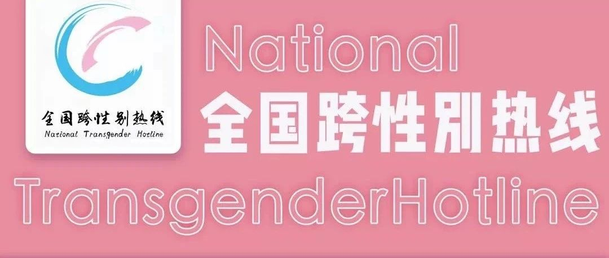

通知 | 全国跨性别热线进行调整
通知
跨 性 别 热 线 调 整 啦
基于最近6个月的数据统计，81.96%的来访者希望接线时间定在周五-周日，为了能将有限的接线员资源更高效的利用起来，经过热线委员会研究决定，全国跨性别热线的接线时间将进行以下调整：
接线时间调整为每周的周五、周六以及周日（即每周的周五及非工作日，节假日时接线时间将进行一定的调整，具体调整请参考推文）。我们的接线员将会更密集的安排在这几天，也就是说从您报名到完成接线的时间将会更短。
接线入口仍然是原来的灵析报名入口：
报名成功后，建议您主动添加协调员的QQ